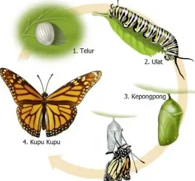
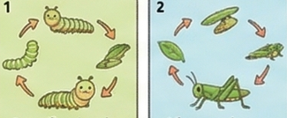

⭐

Siklus Hidup
Semua hewan punya siklus diantaranya lahir, tumbuh, dan berkembang dari telur hingga dewasa.
🌟

Apa itu Metamorfosis?
Perubahan bentuk tubuh hewan. Ada 2 jenis yaitu Sempurna & Tidak Sempurna.
✨
Metamorfosis Sempurna
Fasenya: Telur → Larva (Ulat) → Pupa (Kepompong) → Imago (Kupu-kupu).